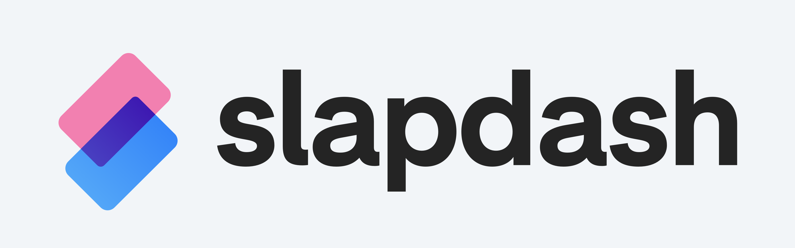

Slapdash Brand Design
Project
I completed a redesign of Slapdash's branding to help their brand better align with their product values for their version 1.0 launch.
Problem
Slapdash's tagline, "Think at the speed of thought," was not accurately reflected in their previous logo. I was asked to take the basic idea of their previous logo, and redesign it in a way that better reflected their company ideals.
Role
I assumed the role of a freelance product designer for this redesign, often meeting in person and over Slack with the four person local team at Slapdash.

The final brand guidelines
Solution
The final brand uses two transparent overlapping rectangles to create a subtle S. Slapdash as a product aims to be your one stop shop for all of your online services, acting as an easy to query file browser, communication log, collaboration hub, and more. Their company mission is to make using their personal data aggregator as fast and as seamless as possible. I chose to incorporate neon colors to give the logo a modern, fast feel, while the overlapping element represents the blending of the user's scattered online data.I set the Slapdash wordmark in the typeface Eina 02 to evoke a similar modern sense of speed. I felt that the slanted terminals of the s and a as well as the curved tails on letters such as l and a helped evoke this feeling.
Prior User Research
Before I joined this project, Slapdash was putting their project in front of as many eyes as they could to gather feedback. When specifically asked about the logo, early users were reporting that it felt disconnected from the rest of the product. This fit the companies feeling that the logo felt like a placeholder while they further developed their core product.

The original logo.
Early Explorations
To begin the design process for this branding project, I started by getting a feel for their platform and sketching out some ideas for potential icons.

Medium and High Fidelity Work
After reviewing these early ideas with Chalk and discussing what worked and what didn't work, I moved onto creating medium fidelity mockups and prototypes to investigate how some details of the UX might look and feel.

These prototypes led to the eventual solution, and later, finishing touch details. I spent time designing the primary icons for the UI to signify different modes of communication, and worked with the team on refining details such as having the users's message bubbles change color in accordance with the set mode.
Brand
Designing the iOS app icon was something I worked on concurrently. My process was very similar to the design of the core UX flow. I started with rough sketches of all kinds of different ideas and narrowed down on what Chalk liked and what fit the message they were trying to convey with their brand.From here I moved into high fidelity mockups, making over one hundred iterations of a core idea to arrive at the finalized end product.The final icon was eventually used as primary action button in the core UX to tie the brand design and the UI together.